分類與共同祖先
- 這節要問：分類如何反映生物間的親緣關係？
- 18 世紀林奈依生物形態分類，採界、綱、目、屬、種的階梯式架構，每個物種都有特定分類地位。
- 林奈相信創造論，認為物種不變，因此這套分類無法呈現親緣關係。
- 達爾文以樹狀圖解釋演化，並以親緣關係作分類依據。
- 同一祖先演化出的物種組成分類群；不同分類群若有更早的共同祖先，又可合成更大的分類群。
- 共同祖先代表過去的祖先，不是指某個現生物種。
- 人類與黑猩猩的共同祖先較晚，因而比人類與舊世界猴的共同祖先更近。
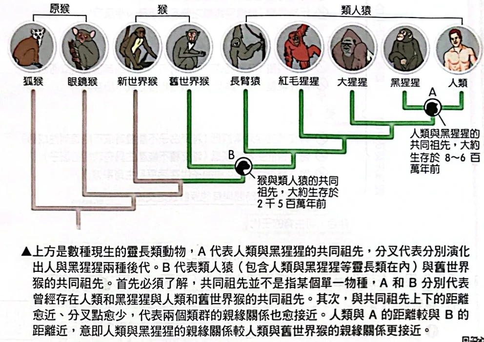
靈長類共同祖先與親緣關係原講義PDF第62頁・印刷第172頁・點圖放大
化石與地質年代
- 這節要問：過去的生物留下什麼演化線索？
- 化石是保存在地層中的古代生物遺跡，包括硬殼、骨骼、身體全部或局部，以及活動痕跡。
- 陸生生物較不易形成化石，因為遺體易受風化、吞食、腐化和分解。
- 水生生物的遺骸常迅速被沉積物覆蓋，因而減慢腐化分解；硬骨或骨骼再經礦物化，較可能形成化石。
- 化石形成與發現需要一連串條件：適時適地死亡、埋藏、石化，再經地殼變動使岩層裸露，才可能被發現。
- 地質年代按先後排列不同生物的出現與消失，可供比較生命歷史。
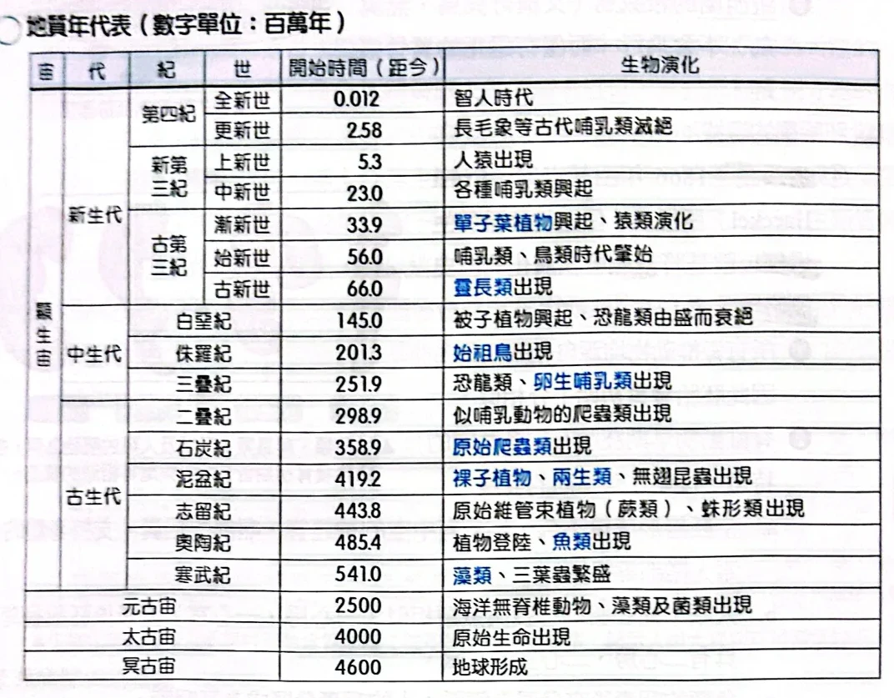
地質年代表：開始時間與生物演化原講義PDF第63頁・印刷第173頁・點圖放大
解剖學：同源、同功與痕跡構造
- 這節要問：外形或功能相似，是否一定代表親緣近？
- 同源構造指同一祖先演化出的不同生物，其器官胚胎發生相同、基本構造相似。
- 哺乳類、爬蟲類與鳥類的前肢是例子；因適應不同環境而改變，屬趨異演化。
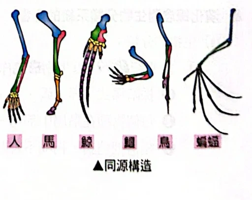
人、馬、鯨、鱷、鳥與蝙蝠前肢的同源構造原講義PDF第62頁・印刷第172頁・點圖放大
- 同功構造來自不同祖先，因適應環境而演化出相似功能，是趨同演化的結果。
- 鳥翼和昆蟲翅都能飛；聖誕紅的紅色部分不是花瓣，卻具有花瓣功能。
- 同功構造不能直接作親緣分類依據，因為功能相似可能由不同起源獨立形成。
- 痕跡構造在相近種類中構造退化且無功能；這是多次突變經天擇的結果，並非用進廢退。
- 人的盲腸、闌尾、尾骨、智齒、體毛和動耳肌是例子。
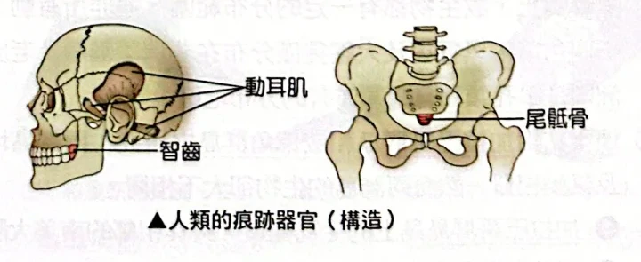
人類的痕跡器官原講義PDF第63頁・印刷第173頁・點圖放大
- 鯨魚沒有後鰭（腹鰭），尾鰭起始處仍有退化骨盆和後肢骨痕跡。
- 紐西蘭希威鳥（奇異鳥、無翼鳥）不會飛，僅有退化翼骨痕跡。
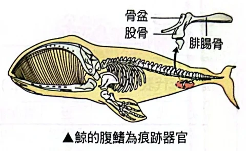
鯨的腹鰭為痕跡器官原講義PDF第64頁・印刷第174頁・點圖放大
胚胎學與生物地理學
- 這節要問：胚胎與地理分布如何提供親緣線索？
- 1866 年赫克爾（Ernst Haeckel）提出重演說：個體胚胎發生過程簡略重演祖先種族演化歷史。
- 脊椎動物源自相同祖先，所以胚胎發育初期相似，後期才有不同發展。
- 中胚層形成後不久，早期胚胎都有中空神經管、咽囊、脊索和尾部。
- 人類早期胚胎的心臟與魚類相似，有一心房、一心室；最後發育成二心房、二心室。
- 魚的咽囊後來發展為鰓弧；人的咽囊發展為耳咽管。
- 重演說有言過其實之處：哺乳動物發生過程並未依序經過魚期、兩生期、爬蟲期；發生重演的是胚胎演化，而非個體演化。
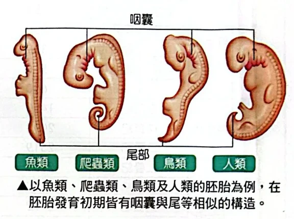
魚類、爬蟲類、鳥類及人類的早期胚胎原講義PDF第64頁・印刷第174頁・點圖放大
- 生物地理學的基本假設：每種生物在某一時間、某一地點出現一次，起源地稱種源中心。
- 個體增加後從中心向外散布，遇到障礙便受限制，所以各物種有一定分布範圍。
- 黑猩猩、大猩猩分布非洲；貓熊、老虎分布亞洲大陸；澳洲是單孔類與有袋類僅有的分布地區。
- 加拉巴哥與威德角群島緯度、氣候相似，但生物不同：前者近南美種類，後者近非洲種類。
- 此分布支持島上生物分別由鄰近大陸遷來，再演化成新物種，因為島嶼生物與鄰近大陸較相似。
- 海洋島嶼通常缺少陸生哺乳類與兩生類，因為距大陸遠，牠們無法自力跨越海洋。
- 島嶼與大陸隔離，所以特殊的動、植物相足以說明演化的真實性。
生物化學與鳥類的親緣關係
- 這節要問：分子和化石如何協助重建親緣關係？
- 物種的血緣關係反映在 DNA 和蛋白質上；核苷酸或胺基酸排列愈相似，親緣愈近。
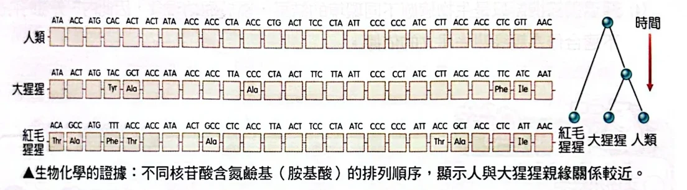
核苷酸與胺基酸序列的比較原講義PDF第65頁・印刷第175頁・點圖放大
- 始祖鳥有爬蟲類特徵：喙中有牙齒、翅端有趾爪、長尾椎骨；也有鳥類特徵：羽毛和翅膀。
- 近鳥龍是有羽毛的小型恐龍，視為恐龍演化到鳥類的中間物種。
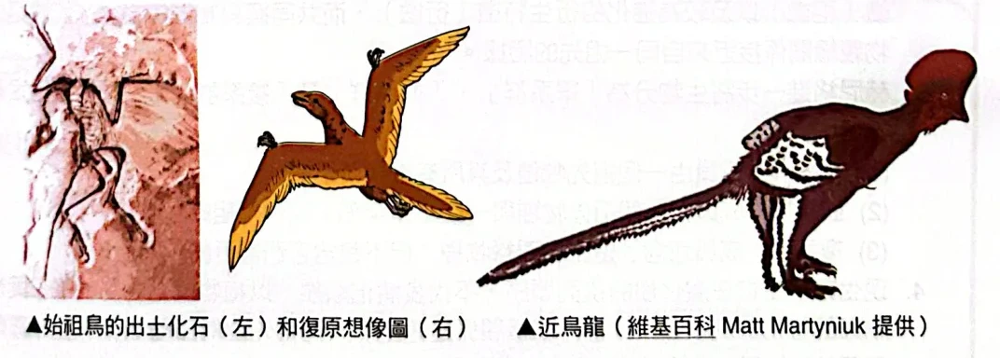
始祖鳥化石、復原圖與近鳥龍原講義PDF第65頁・印刷第175頁・點圖放大
- 鳥類與鱷魚等爬蟲類有許多相似構造；化石、解剖、胚胎、DNA 和蛋白質序列共同協助重建親緣。
- 以往把鳥類、爬蟲類及哺乳類分成三個分類群，也有學者認為爬蟲類是鳥類及哺乳類的共同祖先。
- 目前認為鳥類與已滅絕的恐龍可能只是爬蟲類演化過程中的一個分支。
- 鳥類與恐龍最接近，其次是現生爬蟲類；與同為內溫動物的哺乳類反而較遠。
- 體溫調節是適應不同環境的同功現象，因此內溫、外溫特徵不適合作為建立親緣的依據。
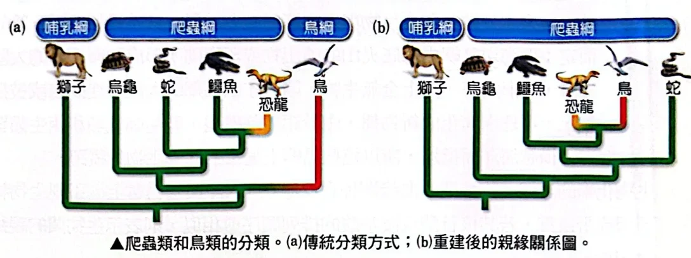
爬蟲類和鳥類的分類及重建後的親緣關係原講義PDF第66頁・印刷第176頁・點圖放大
支序系統學與演化樹
- 這節要問：怎樣讀樹狀圖，才能判斷分類群的親緣？
- 1950 年代，德國昆蟲學者赫尼格（Willi Henning）主張分類應反映親緣，並以共祖關係建立二叉樹狀圖。
- 每個節點代表祖先一分為二，形成兩個對等的姊妹群；不可能在同一時空一分為三或更多。
- 祖徵是較原始的同源特徵；衍徵是較進化的同源特徵。
- 共同衍徵可作為親緣接近、來自同一祖先的證據，因為它由該祖先傳給後代。
- 樹上排列順序不代表演化順序，因為支條可繞節點旋轉 180°。
- 例如單子葉植物與蘚苔、蕨類與蘚苔的親緣關係等距，因為共同祖先都是節點 A。
- 現生物種都經歷相同的演化時間；臺北樹蛙（Rhacophorus taipeianus）與現代人（Homo sapiens）皆如此。
- 蛙的起源雖早於哺乳類，不能因此認為現代人累積較多變異或更進化。
- 有時間軸時，支條長度代表分化後演化時間；無時間軸時通常代表物種變異程度。
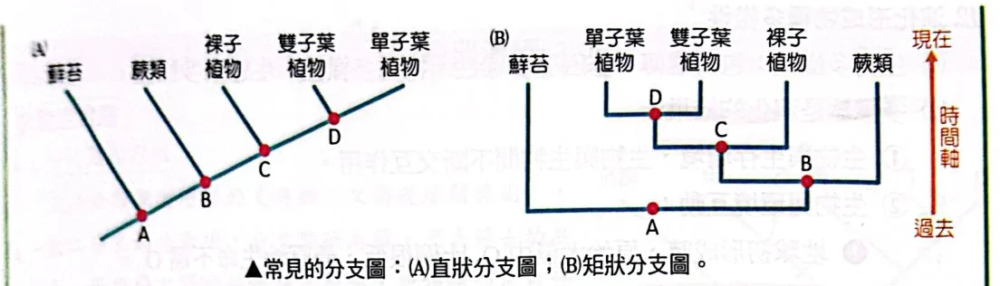
直狀分支圖與矩狀分支圖原講義PDF第67頁・印刷第177頁・點圖放大
分類系統的重建
- 這節要問：新研究如何改變分類系統？
- 分類系統依新研究持續修正，依序有二界、三界、五界、六界與三域。
- 二界為 18 世紀林奈提出；三界為 19 世紀；五界由惠特克於 1969 年提出。
- 渥易斯於 1980 年提出六界，1990 年提出三域：真細菌域、古細菌域、真核生物域。
- 二域說認為真核生物由古細菌吞噬真細菌後內共生形成；古細菌與真核生物基因高度相似，支持此想法。
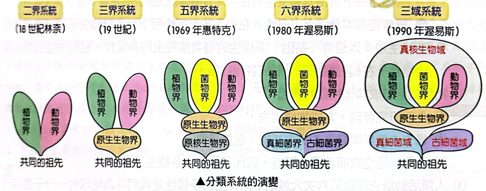
二界至三域分類系統的演變原講義PDF第67頁・印刷第177頁・點圖放大
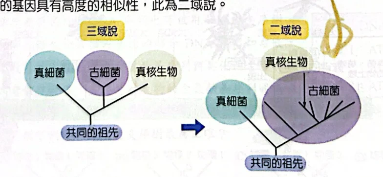
三域說與二域說的比較原講義PDF第67頁・印刷第177頁・點圖放大
生物多樣性與滅絕
- 這節要問：多樣性如何產生，物種滅絕又有什麼影響？
- 生物多樣性包括遺傳（基因）多樣性、物種多樣性和生態系多樣性。
- 多樣性是演化的結果，因為生物與環境、生物與生物持續互動。
- 原始大氣氧比例低，最原始生命不需氧；藍綠菌（藻）出現後氧增加，演化出有氧呼吸生物，也有生物避居貧氧環境。
- 約 4 億年前造山運動增加陸地面積，部分生物演化出適應陸地乾燥環境的構造。
- 環境多樣使生物沒有固定演化方向，而是不斷分歧，演化出多種生命形式。
- 植物與植食動物、開花植物與傳粉動物、掠食者與獵物彼此互動，在天擇下累積有利性狀，加速演化。
- 遺傳變異本身沒有方向；複雜互動與環境差異使生物產生不同適應方式。
- 有性生殖形成新的基因組合，擴展基因多樣性；經輻射適應可形成各種物種。
- 化石研究發現九成物種消失；過去 5 億年間發生 5 次大滅絕，包括恐龍的滅絕。
- 恐龍滅絕後哺乳類繁盛，因為牠們取代了恐龍的各種生態地位。
- 人類活動是否開啟第六次大滅絕？保育生物多樣性是地球村一分子的義務。
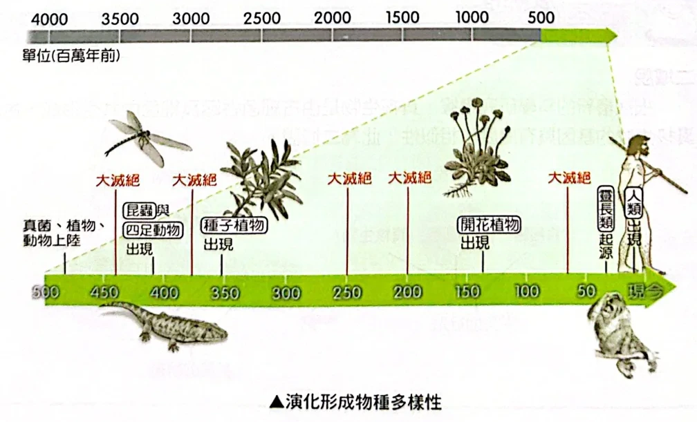
演化形成物種多樣性與大滅絕時間軸原講義PDF第68頁・印刷第178頁・點圖放大
經典演練：支序樹題組 1–4
- 這節要運用祖徵、衍徵與共同祖先讀懂支序樹。
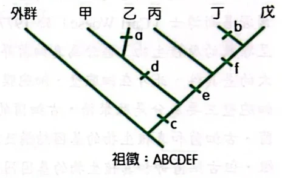
演練1–4：支序樹及祖徵原講義PDF第69頁・印刷第179頁・點圖放大
物種乙尚具有的祖徵為何？（由 ABCDEF 6 個特徵中選出）
看答案與詳解收起
答B、E、F。
解- 由根部走到乙，經過 c、d 和 a，表示祖徵 C、D 和 A 已分別變成衍徵。
- 路徑未經 b、e、f，所以 B、E、F 仍是祖徵。
小結沿根到乙的路徑檢查改變：未改變的是 B、E、F。
下列何者是丙和戊的共衍徵？（由 abcdef 6 個特徵中選出）
看答案與詳解收起
答c、e。
解- 從根部到丙及戊的共同路徑都經過 c 和 e，所以兩者共享 c、e。
- f 在丙分出之後，a、b、d 位於其他分支，因此不是兩者的共衍徵。
根據上圖、支序樹概念與達爾文的演化理論，下列敘述哪些正確？（多選）
(A)外群比甲物種先演化出來 (B)達爾文也認為物種間有共同祖先 (C)乙和丙的親緣關係，較甲和乙的親緣關係近 (D)從支序樹分支的所有枝條，都是能在天擇中適應，存活至今的物種 (E)若物種甲～戊是加拉巴哥群島的雀鳥，則牠們的共同祖先應來自南美洲。
看答案與詳解收起
答B、E。
解- (A) 錯：外群較早分支，但現生物種都經歷相同的演化時間，所以不能說現生的外群比甲先演化出來。
- (B) 對：達爾文以共同祖先解釋物種同源。
- (C) 錯：甲和乙的最近共同祖先比乙和丙的近。
- (D) 錯：枝條表示演化支系，不能據此斷定所有支系都存活至今。
- (E) 對：加拉巴哥群島的生物與鄰近南美大陸種類相近，可推測祖先從南美遷來。
小結親緣看最近共同祖先，枝條排列不代表現生物種的先後。
除外表特徵外，DNA 序列也可被用來建構支序樹。今有三種生物某相同基因的部分 DNA 序列如下表，假設可將三個物種中含氮鹼基序列與其他兩者差異最大者當作外群，並將外群生物的含氮鹼基序列視為祖徵，每個含氮鹼基的差異視為一個衍徵，以繪製支序樹，則下列哪一選項的支序樹最為正確？
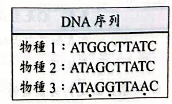
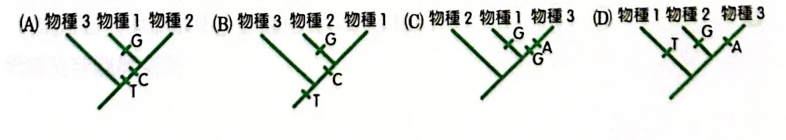
看答案與詳解收起
答A。
解- 物種 1 與 2 只差一處；物種 3 與兩者差異較大，所以物種 3 是外群。
- 物種 1、2 相對物種 3 共同具有 C 和 T，應放在兩者共同的枝條上。
- 物種 1 另有 G，應放在物種 1 單獨的枝條上；符合 (A)。
- (B) 把 G 放在物種 2；(C)、(D) 把物種 3 放錯位置，因為外群應該最先分出。
小結先找差異較大的外群，再把共同衍徵放在共同枝條。
經典演練：分類與內共生題組 5–8
- 這節要比較真細菌、古細菌與真核生物，並運用內共生圖推理。
請由下圖推論，下列敘述哪些正確？（多選）
(A)粒線體與葉綠體的形成可用「細胞膜內陷說」來解釋 (B)圖(a)的細菌應為好氧異營菌 (C)圖(b)的細菌應為光合自營菌，如藍綠菌 (D)粒線體的外膜可能來自真核細胞膜 (E)葉綠體未被攝入前為獨立生存的細菌，故此胞器又稱為「全自主性胞器」。
看答案與詳解收起
答B、C、D。
解- (A) 錯：圖示細菌被攝入並共生，支持內共生說。
- (B) 對：細菌 A 對應粒線體，其祖先可進行好氧代謝。
- (C) 對：細菌 B 對應可行光合作用的葉綠體，類似藍綠菌。
- (D) 對：攝入時宿主細胞膜可包圍細菌，形成外膜。
- (E) 錯：葉綠體依賴細胞提供部分所需物質，屬半自主性胞器。
小結粒線體與葉綠體可用內共生說解釋；葉綠體是半自主性胞器。
下列有關原核生物細胞構造的敘述，何者正確？
(A)藍綠菌缺乏核糖體 RNA (B)極端嗜鹽菌具有膜狀胞器 (C)甲烷菌的細胞壁含肽聚糖 (D)古細菌與真核生物的 DNA 都呈線狀 (E)真細菌與古細菌的基因都能以操縱組模式來調節基因表現。
看答案與詳解收起
答E。
解- (A) 錯：藍綠菌有含 RNA 的核糖體。
- (B) 錯：極端嗜鹽菌是古細菌，沒有膜狀胞器。
- (C) 錯：甲烷菌是古細菌，其細胞壁不含肽聚糖。
- (D) 錯：古細菌為原核生物，其 DNA 呈環狀。
- (E) 對：真細菌和古細菌的基因都可形成操縱組，調節基因表現。
小結真細菌和古細菌都可用操縱組調控，但古細菌細胞壁不含肽聚糖。
下列有關文章中的敘述及推論，何者正確？
(A)六界分類系統較五界分類系統多了病毒界 (B)真細菌在生態系中無法扮演生產者角色 (C)先生成域，再生成界，最後形成物種 (D)原始細胞生成細胞核後，再演化為真細菌與古細菌等生物體 (E)古細菌與真核生物的親緣關係較古細菌與真細菌更為接近。
看答案與詳解收起
答E。
解- (A) 錯：六界區分真細菌界和古細菌界，並未增設病毒界。
- (B) 錯：藍綠菌是真細菌，可光合作用而作生產者。
- (C) 錯：域、界、物種是分類階層，並非形成的時間順序。
- (D) 錯：真細菌和古細菌為無細胞核的原核生物。
- (E) 對：古細菌與真核生物基因結構等具有相似性，顯示親緣較近。
小結分類階層不是出現順序；古細菌與真核生物的親緣較接近。
科學發展是與時並進的，最近的研究發現是古細菌將真細菌吞噬後共生，才演化出真核細胞。在生物分類上，林奈和達爾文在科學發展上都有極大的貢獻，試問兩人的觀點最大的差異為何？
看答案與詳解收起
答林奈依形態分類並認為物種不變；達爾文認為物種演化、具有共同祖先，分類應反映親緣關係。
解- 林奈以形態建立階層分類，並相信物種不變，所以分類未呈現演化親緣。
- 達爾文認為物種由共同祖先分化，因而以親緣關係作為分類依據。
小結林奈依形態且主張物種不變；達爾文依共同祖先與演化親緣分類。
本篇整理
- 這節要把證據、分類與多樣性的重點接起來。
下一篇進入族群遺傳與哈溫定律，觀察族群中基因比例如何變化。
核對原講義全頁（生物2 PDF61–70）
對應印刷171–180頁：PDF61由演化概念對分類系統的影響開始，PDF62–68為演化證據、親緣、分類與多樣性，PDF69–70為經典演練題組1–8。書上此處沒有附答案，依題幹與內容推導。六界系統的年份，書上正文寫1980年、題組文章寫1977年，照原文保留。
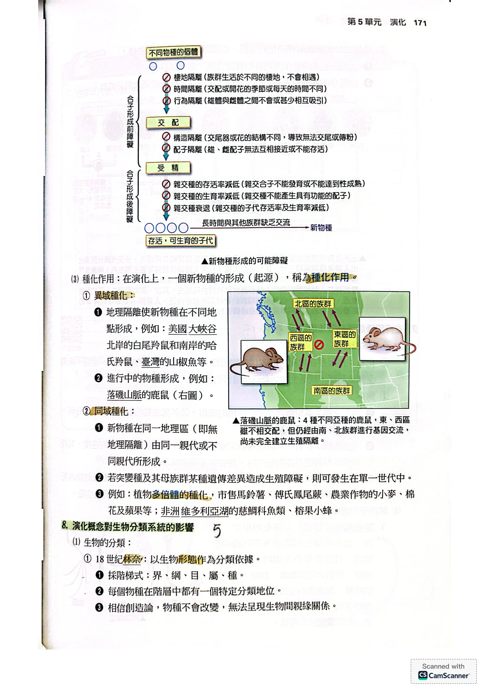
PDF第61頁／印刷第171頁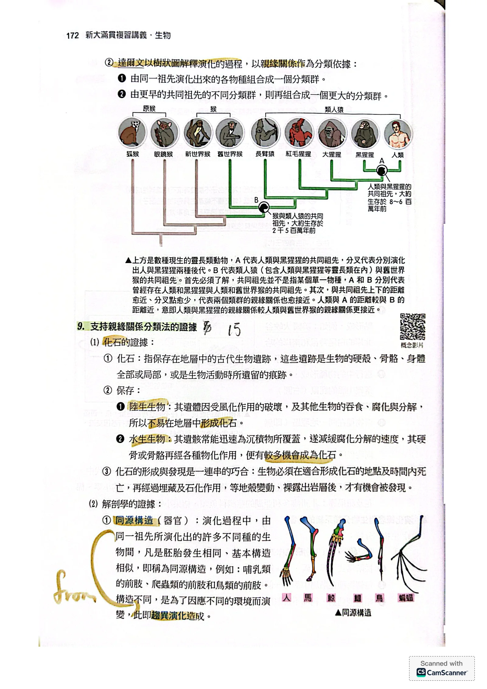
PDF第62頁／印刷第172頁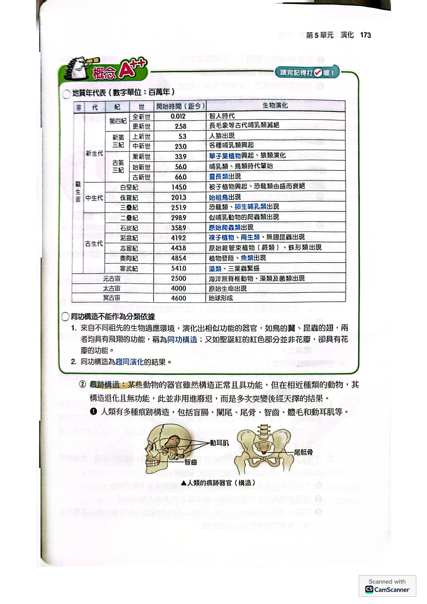
PDF第63頁／印刷第173頁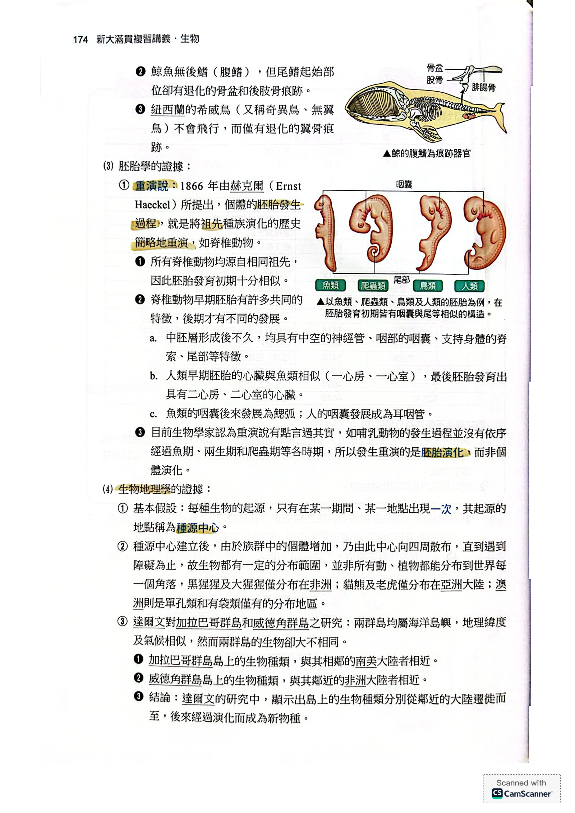
PDF第64頁／印刷第174頁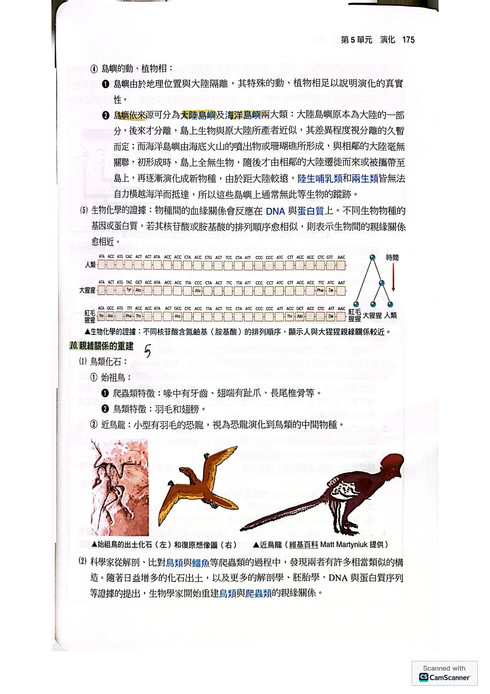
PDF第65頁／印刷第175頁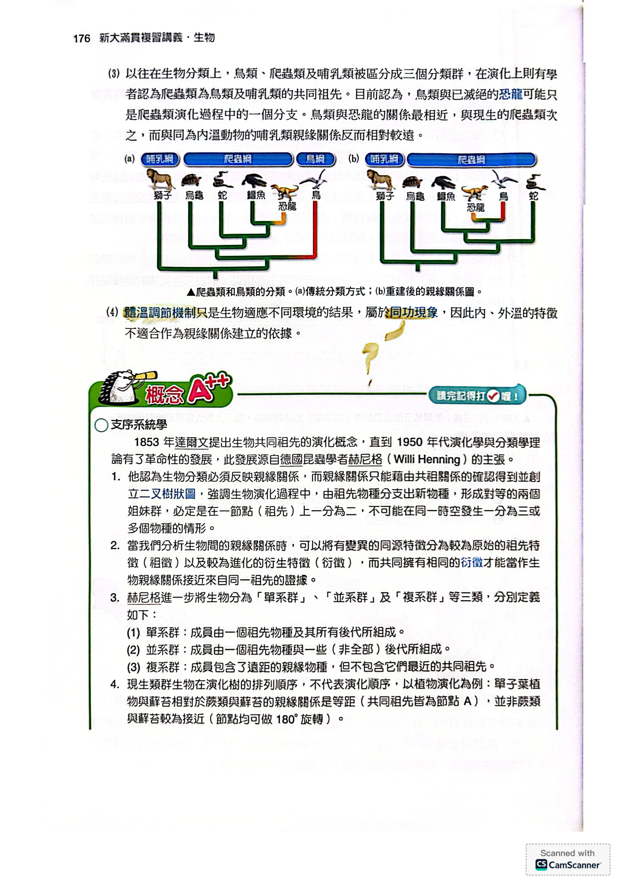
PDF第66頁／印刷第176頁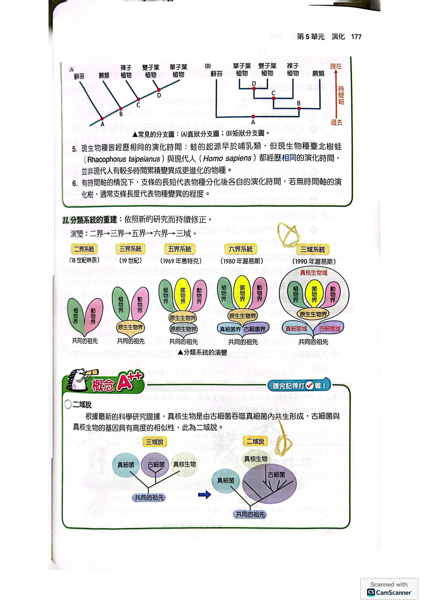
PDF第67頁／印刷第177頁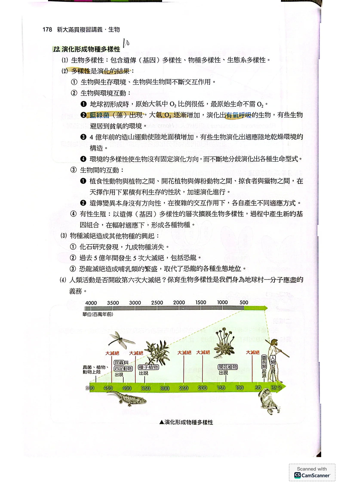
PDF第68頁／印刷第178頁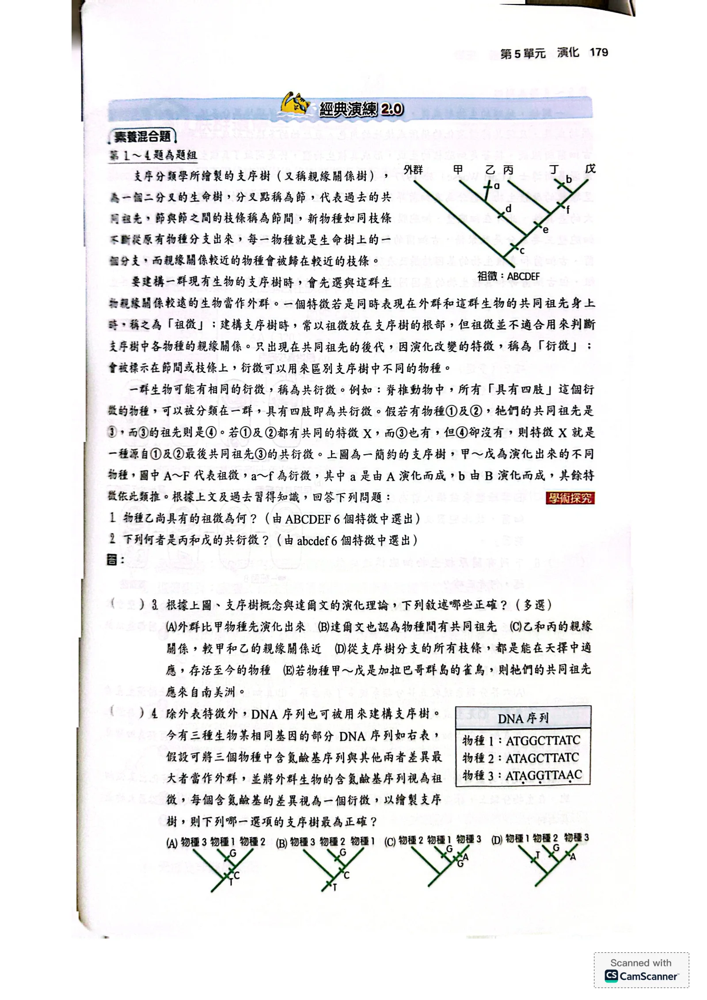
PDF第69頁／印刷第179頁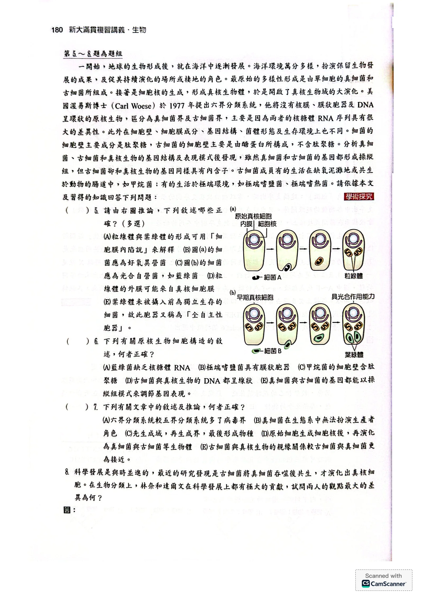
PDF第70頁／印刷第180頁